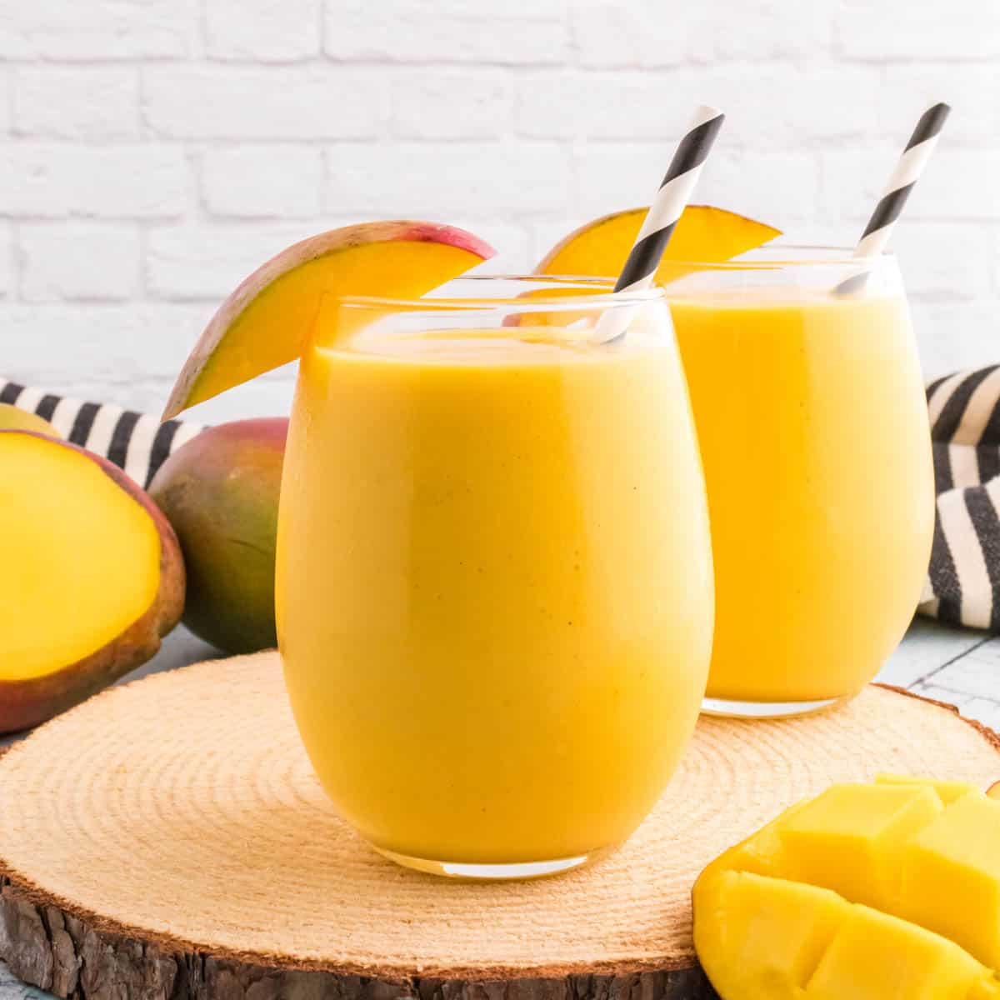

Mango Lassi

Description
This is a mango lassi recipe taken from Hebbar's Kitchen.
It is one of my favourite drinks.
Ingredients
- 2 cup curd
- 1½ cup mango pulp
- 2 tbsp sugar
- 2 tbsp kesar water
- ½ tsp cardamom powder
- ½ cup ice cubes
Steps
- Firstly, in a blend jar take 2 cup curd, 1½ cup mango pulp and 2 tbsp sugar.
- Also add 2 tbsp kesar water, ½ tsp cardamom powder and ½ cup ice cubes.
- Blend together to have a smooth consistency.
- Finally, pour the mango lassi into a glass and top it with pistachios.